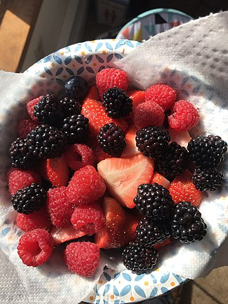
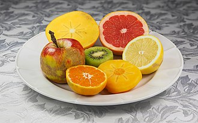
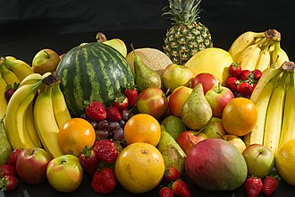

Fruits
All fruits and vegetables should be rinsed before eating. This recommendation also applies to produce with rinds or skins that are not eaten.
It should be done just before preparing or eating to avoid premature spoilage.
Fruits and vegetables should be kept separate from raw foods like meat, poultry, and seafood, as well as from utensils that have come in
contact with raw foods.
Fruits and vegetables that are not going to be cooked should be thrown away if they have touched raw meat, poultry, seafood, or eggs.

All fruits benefit from proper post harvest care, and in many fruits, the plant hormone ethylene causes ripening. Therefore,
maintaining most fruits in an efficient cold chain is optimal for post harvest storage, with the aim of extending and ensuring shelf life
Types of Fruits
| # |
Type |
Example |
| 1 |
Aggregate Fruit |
Lilium,Magnolia,Raspberry,Pawpaw,Blackberry |
| 2 |
True Berry |
Banana,Grape,Kiwifruit,Blackcurrant,Blueberry |
| 3 |
Accessory Fruit |
Apple,Stone Fruit,Pineapple,Strawberry |
India is the world's second-largest producer of fruits and vegetables. ...
In FY 2019, ~8.31 Mn tons of fruits and vegetables were processed in India,
which is expected to reach 16.39 Mn tons by 2024, expanding at a CAGR of ~14.84% during the FY 2020-FY 2024 period.
Typically, many botanical fruits —"vegetables" in culinary parlance— (including tomato, green beans, leaf greens, bell pepper, cucumber,
eggplant, okra, pumpkin, squash, zucchini) are bought
and sold daily in fresh produce markets and greengroceries and carried back to kitchens, at home or restaurant, for preparation of meals

